설비를 작업장에 등록하고 수리와 예방 점검을 기록하면 원장에서 고장 간격, 수리 시간, 다음 고장 예상일을 봅니다. 품질은 입고·출고·제조 때 자동 검사와 불합격 시 불량 경보를 만듭니다. 검사는 입고를 막지 않습니다.
무엇을 · 왜#
작은 제조사는 설비 고장이나 공급사 불량 부품으로 생산 차질을 겪습니다. 원장은 언제 무슨 일이 있었는지 기록합니다.
| 모듈 | 하는 일 |
|---|---|
| 설비 보전 | 설비와 수리·점검 요청, 날짜별 예방 보전 계획을 관리합니다. 고장 간격(MTBF), 수리 시간(MTTR), 다음 고장 예상, 월별 정지 시간을 봅니다. |
| 품질 | 검사 기준(언제, 무엇을, 얼마나 자주)에 따라 입고·출고·제조 때 검사를 만듭니다. 불량 경보, 공급사별 불량률과 제조 직행률을 봅니다. |
두 모듈은 다른 모듈을 직접 호출하지 않습니다. 고장 수리를 시작하면 설비 보전은 이벤트만 보내고, 제조가 이를 받아 작업장을 「보전 중」으로 표시합니다. 품질은 재고의 입고 이벤트로 검사를 만듭니다.
먼저 알아 둘 것
- 가온가전은 가상 회사이고, 사람·거래처·수치는 모두 가상입니다. 화면은 로컬 Supabase에서 찍었습니다.
- 녹화 전에 재고·구매·제조를 켜고, 구성원 김보전(설비 보전), 오제조(제조), 최품질(품질), 이재고(재고)를 넣었습니다. 오제조가 작업장
프레스 라인을, 관리자가 설비 분류프레스(기본 담당 김보전)를 만들었습니다. - 고장 간격을 보이려고 지난 두 달의 고장 수리 두 건(4시간, 6시간)을 당시 시각으로 기록했습니다. 볼트는 대성금속 300개(50.0 mm)와 한빛볼트 200개(50.1 mm)를 먼저 받아 합격시켰습니다.
- 품질은 재고가 켜져 있어야 켤 수 있습니다. 설비 보전은 다른 모듈 없이도 사용합니다.
따라 하기#
- 두 모듈 켜기. 관리자로 설정 → 모듈에서 설비 보전과 품질을 켭니다. 설비 보전은 켜기 전의 고장과 수리가 원장에 없다고, 품질은 검사가 다른 처리를 막지 않는다고 알려 줍니다.
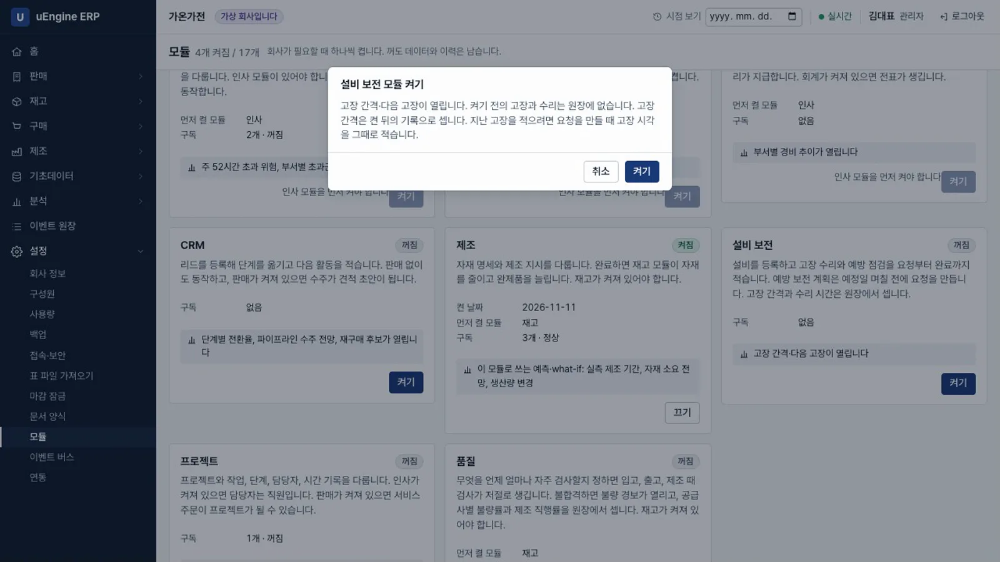
모듈 켜기 - 설비 등록. 김보전으로 설비 보전 → 설비 → 새로 만들기에서 이름
프레스 1호기, 일련번호HP-2024-001, 분류프레스, 작업장프레스 라인을 넣고 저장합니다. 번호EQ00001이 붙고, 담당 기술자는 분류의 기본 담당인 김보전입니다.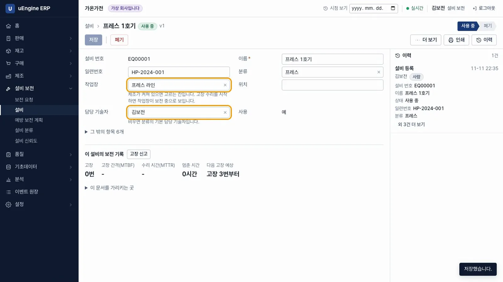
설비 - 예방 보전 계획. 설비 보전 → 예방 보전 계획에서
프레스 월간 점검을30일마다,7일 전에 만들도록 저장합니다. 첫 예정일이 일주일 이내라 요청MR00001이 생깁니다. 지금 확인을 두 번 눌러도 요청은 하나이고, 다음 예정일은 2026-12-16이 됩니다.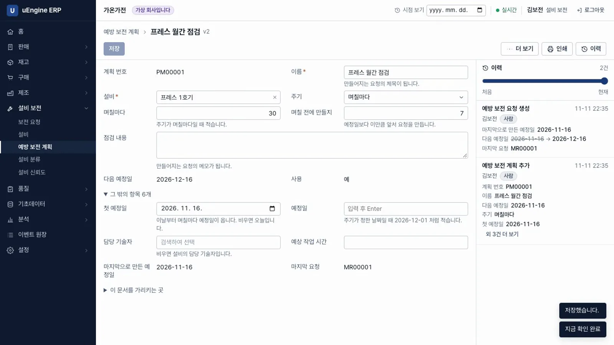
예방 보전 계획 - 달력. 설비 보전 → 보전 요청을 달력으로 보면 16일에
프레스 월간 점검이 있습니다.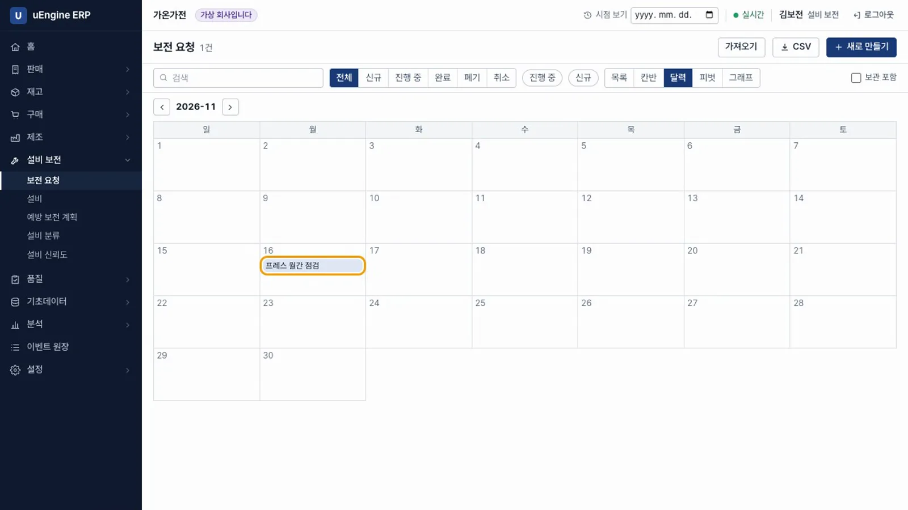
보전 달력 - 고장 신고. 프레스가 다시 멈춥니다. 설비 화면의 이 설비의 보전 기록에서 고장 신고를 누르면 고장 수리 요청
MR00004가 생깁니다. 작업 시작을 누릅니다.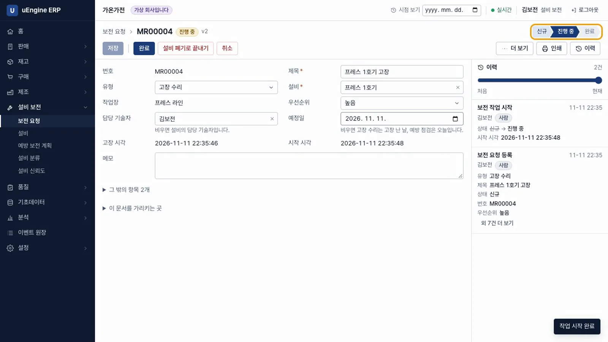
고장 신고 - 작업장이 보전 중. 오제조로 제조 → 작업장을 열면 프레스 라인이 「보전 중」이고, 보전 중인 설비
프레스 1호기 MR00004가 보입니다. 제조가 작업 시작 이벤트를 받아 표시합니다.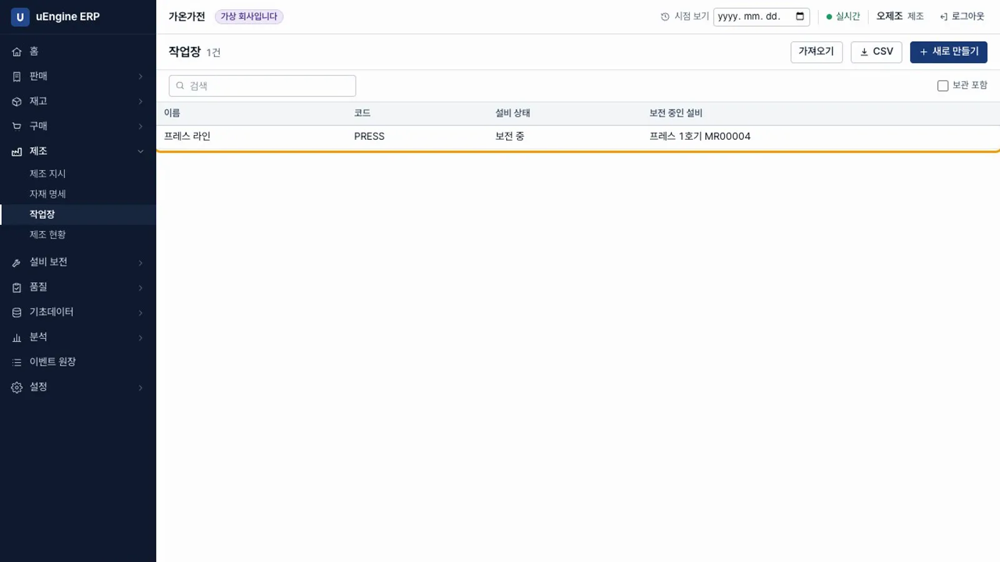
보전 중 - 완료. 김보전으로 요청을 열어 완료를 누르고 작업 시간
2, 정지 시간2.5를 적습니다.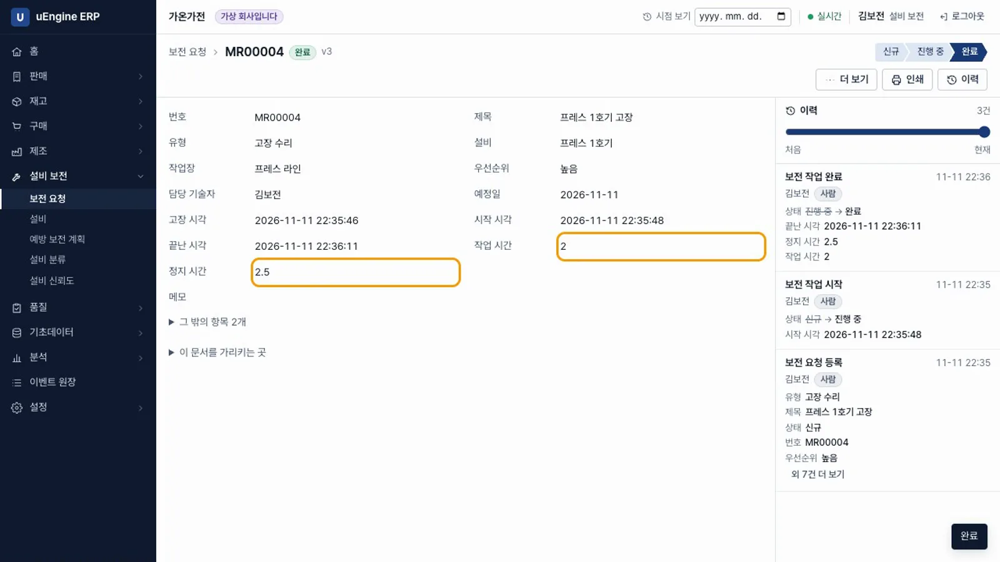
완료 - 다시 가동. 작업장 목록의 프레스 라인이 「가동」으로 돌아옵니다.
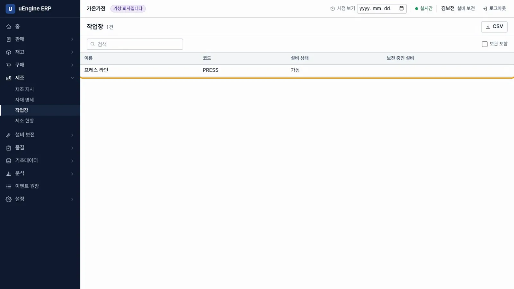
가동 - 고장 간격과 수리 시간. 설비 화면에 고장 3번, 고장 간격 483.4시간, 수리 시간 4.17시간((4 + 6 + 2.5) ÷ 3), 다음 고장 예상 2026-12-02가 나옵니다. 고장이 세 번 이상이면 다음 고장 예상일이 나옵니다.
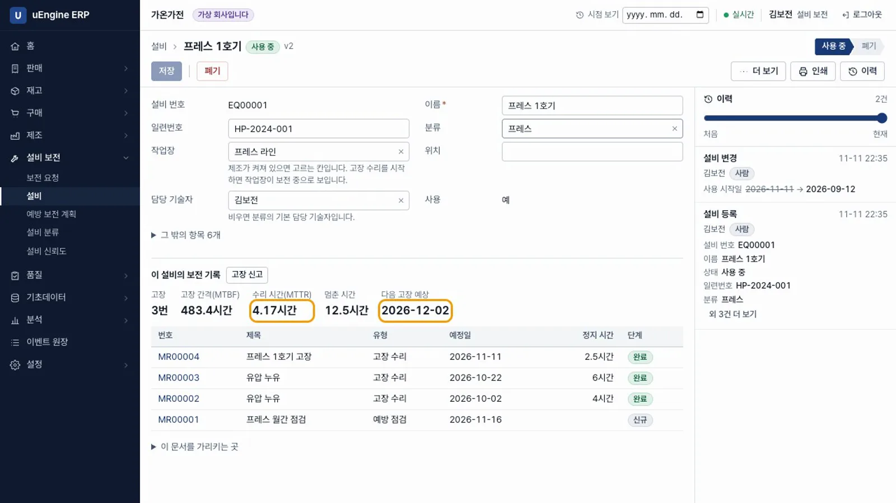
MTTR - 설비 신뢰도. 설비 보전 → 설비 신뢰도에서 설비별 고장 간격, 수리 시간, 가동률과 월별 정지 시간(2026-10 10시간, 2026-11 2.5시간)을 봅니다.
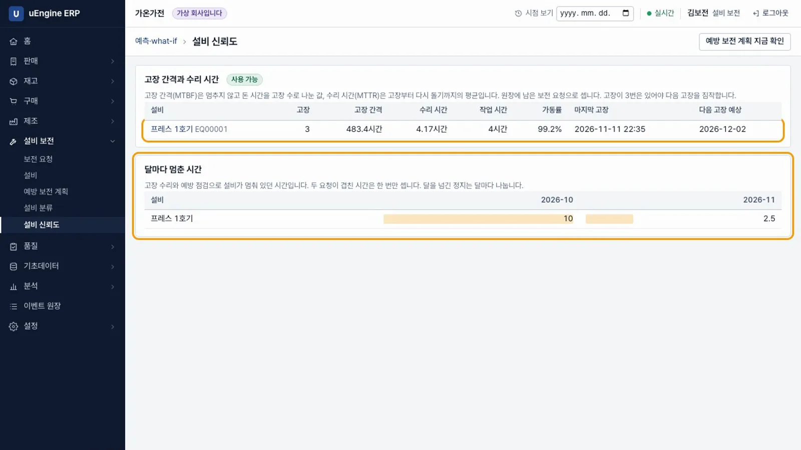
설비 신뢰도 - 검사 기준. 최품질로 품질 → 검사 기준에서
볼트 길이를 만듭니다. 언제는입고, 제품은볼트 M10, 검사 방식은측정, 하한은49.8, 상한은50.2, 단위는mm, 얼마나 자주는매번으로 정합니다.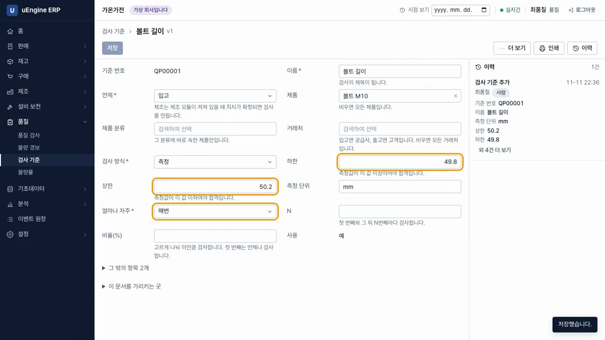
검사 기준 - 검사가 저절로 생김. 녹화 전에 한빛볼트에서 볼트 500개 구매를 확정했습니다. 입고가 준비되자 이재고의 품질 → 품질 검사에
QC00003(입고WH/IN/00003, 검사 대기)이 생겼습니다.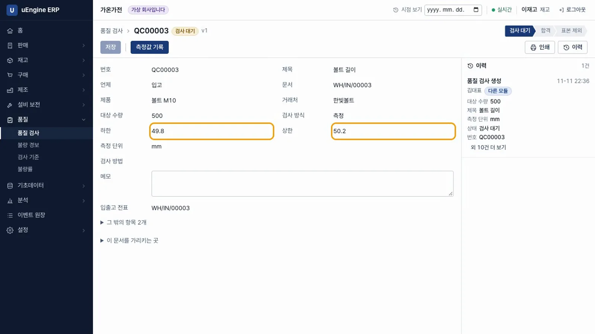
검사 대기 - 측정. 이재고가 측정값 기록에
50.6을 적습니다. 합격 단추는 없습니다. 값이 기준을 벗어나 불합격하고 불량 경보QA00001이 열립니다.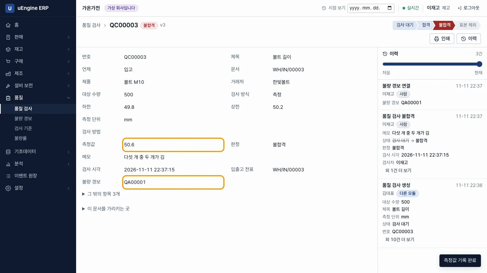
불합격 - 입고는 그대로. 입고
WH/IN/00003을 처리하면 완료됩니다. 재고는 품질 모듈과 따로 작동하며, 검사는 입고를 막지 않습니다. 불합격품은 담당자가 반품·폐기합니다.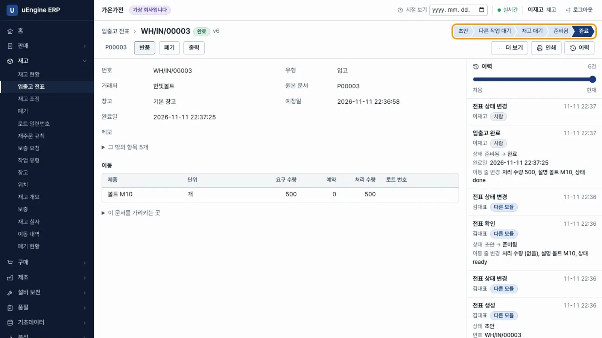
입고 완료 - 불량 경보. 최품질로
QA00001에서 조치 시작을 누릅니다. 해결을 누르고 원인 분류와 시정 조치를 적어야 경보가 닫힙니다.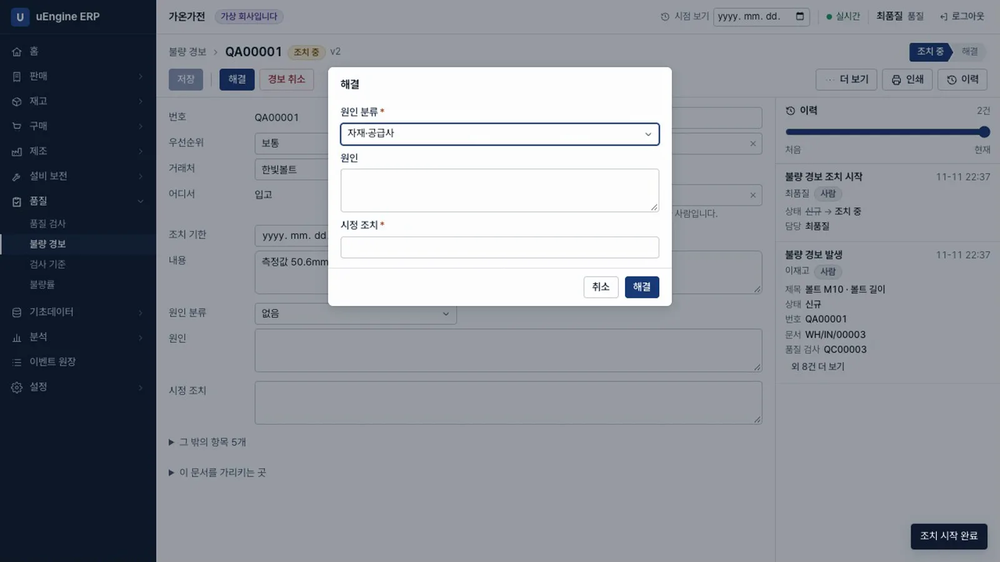
불량 경보 - 불량률. 품질 → 불량률에서 공급사별 불량률을 봅니다. 한빛볼트 50.0%(2건 중 1건), 대성금속 0.0%입니다. 판정한 검사가 30건 미만이면 「근거 부족」으로 표시합니다.
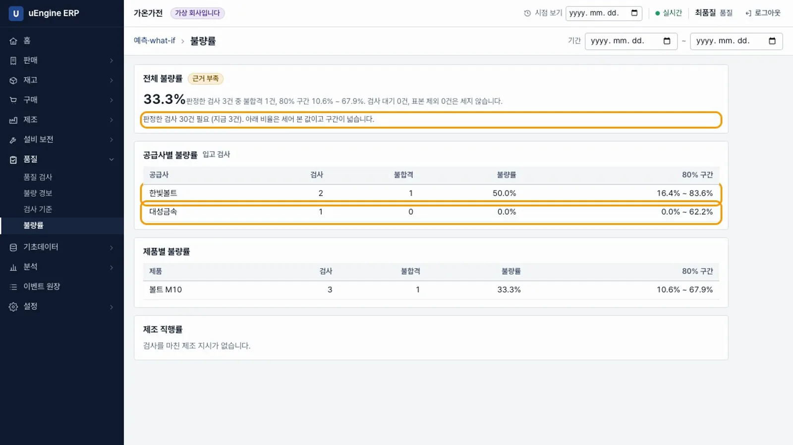
불량률
확인 문제#
설비 보전이 제조의 작업장을 직접 바꾸나요?
바꾸지 않습니다. 설비 보전은 작업 시작·완료 이벤트만 보내고, 제조가 이를 받아 작업장을 「보전 중」이나 「가동」으로 표시합니다.
예방 보전 계획이 같은 날짜의 요청을 두 번 만들 수 있나요?
만들지 않습니다. 요청 번호는 계획과 예정일로 정해집니다. 지금 확인을 여러 번 누르거나 요청을 지워도 같은 날짜의 요청은 다시 생기지 않습니다.
불합격하면 입고가 막히나요?
막히지 않습니다. 검사와 경보를 기록할 뿐입니다. 반품이나 폐기는 담당자가 합니다.